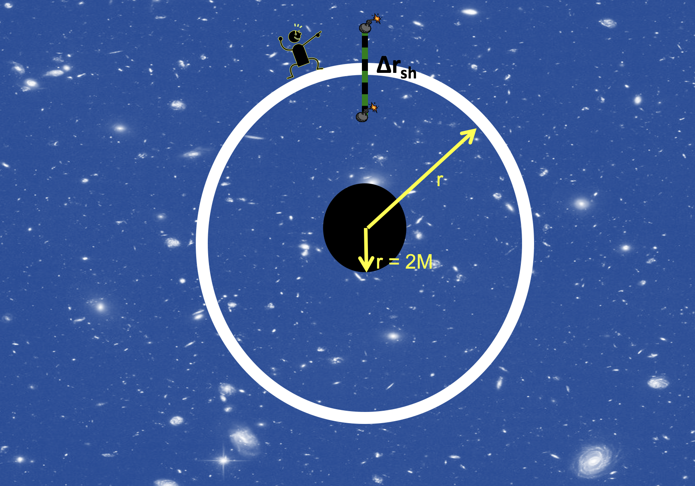

Forrige side🙂 🙁3 observatørerPADLET

Her ser vi situasjonen med to sprengladninger som går av samtidig (dermed to eventer) i begge ender av staven. Kan du nå finne en sammenheng mellom lengden Δr målt av langt-vekkobservatøren for staven som har lengden Δrsh målt av skallobservatøren? Merk at vi antar svært små avstander her, Δr er egentlig en infinitesimal liten dr.